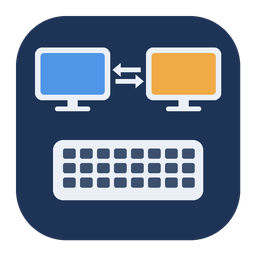

…
KV Bridge 需要这个权限才能在 Mac 上打字和移动鼠标。打开系统设置，在列表里找到 KV Bridge 并打开开关。
第一次使用时，在这里生成配对码，然后在 Windows 的 KV Bridge 里输入。
在 Windows 的 KV Bridge 里选择这台 Mac，输入：
后失效 · 取消
正在同一个 Wi-Fi 里寻找打开了 KV Bridge 的 Mac…
在 上点「配对新电脑」，然后输入显示的 6 位数字：
还没有配对。